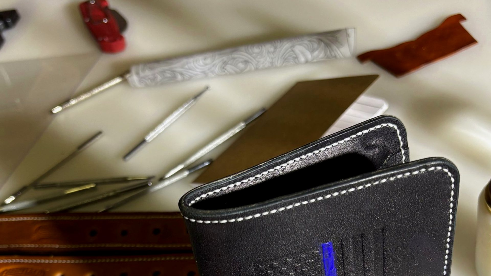

Three ways to place your new marks on the site. The live homepage currently uses
Option 1 — Seal First (recommended). Pick another if you want a different balance.
Seal A — circular maker’s sealHead Knife O — craft / stamp mark
Option 1 · Recommended · Live on site
Seal First
Circular seal A is the primary brand (header, hero lockup, footer).
Head knife O appears where craft and stamps matter — Our Craft, Stamps, and maker moments.
Corbett & Co. Leather Works

Corbett & Co.
Leather Works
Veteran-owned. American-made. Built by hand.
Our Craft
Head knife marks the bench.
Stamps
Best for a classic heritage shop presence
Seal stays legible at favicon / nav sizes
Head knife stays special — craft identity, not overused
Option 2
Tool First
Head knife O leads the brand — unique and unmistakably leathercraft.
Seal A supports stamps, patches, and formal lockups.
Corbett & Co. Leather Works
Corbett & Co.
Leather Works
Cut, stamped, and finished at the bench.
Maker’s seal
Seal A for formal marks & stickers.
Stamps
Most distinctive — nobody else has this silhouette
Stronger “tools of the trade” story
Seal still available for round stamps and formal use
Say the word and we can switch the live site to Tool First.
Option 3
Dual System
Both marks share the spotlight: seal for the company name, head knife as a paired craft emblem.
Hero shows a dual lockup; stamps section sells both as imprint options.
Corbett & Co. Leather Works
Corbett & Co.
Leather Works
Two marks. One bench. Built to last.
Brand pair
Use
Seal = company · Knife = craft & custom stamps
Clearest system if you’ll sell both as stamp/sticker products
Slightly busier in the header and hero
Works well once customers learn both marks
We can switch the live site to Dual System on request.
 Corbett & Co. Leather Works
Corbett & Co. Leather Works